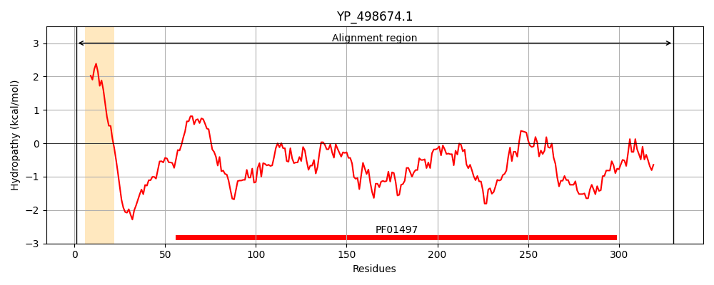
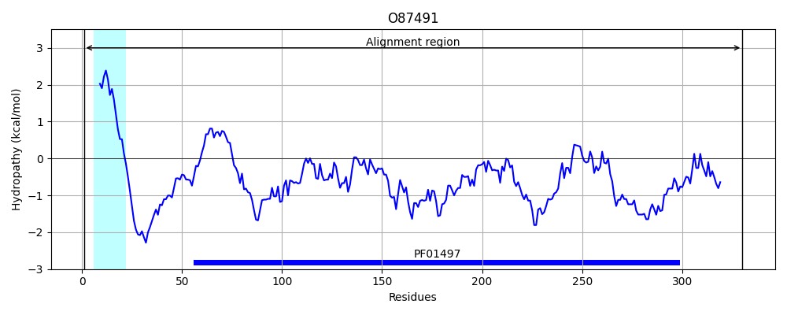
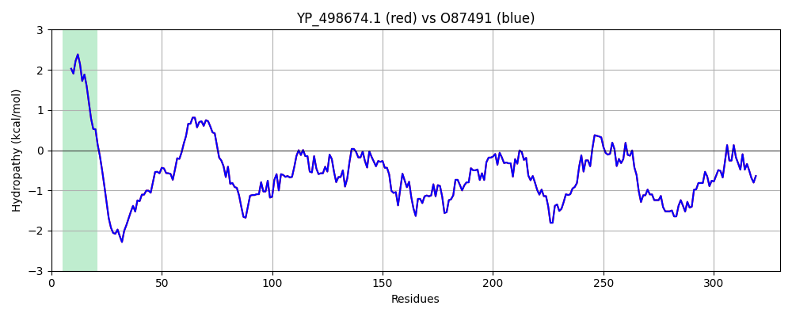

Hit Accession: O87491
Hit TCID: 3.A.1.14.28
Hit Description: gnl|BL_ORD_ID|7703 gnl|TC-DB|O87491|3.A.1.14.28 Iron (Fe3+) ABC superfamily ATP binding cassette transporter, binding protein OS=Staphylococcus aureus OX=1280 GN=sirA PE=4 SV=1
Mach Len: 330
e:0.000000
Query TMS Count : 1
Hit TMS Count: 1
TMS-Overlap Score: 0.850000
Predicted Substrates:None
BLAST Alignment:
Score: 1681 , Bit scores: 652 bits, E-value: 0.0e+00, Alignment length: 330, Percentage identity: 100
Query: 1 MNKVIKMLVVTLAFLLVLAGCSGNSNKQSSDNKDKETTSIKHAMGTTEIKGKPKRVVTLYQGATDVAVSLGVKPVGAVESWTQKPKFEYIKNDLKDTKIVGQEPAPNLEEISKLKPDLIVASKVRNEKVYDQLSKIAPTVSTDTVFKFKDTTKLMGKALGKEKEAEDLLKKYDDKVAAFQKDAKAKYKDAWPLKASVVNFRADHTRIYAGGYAGEILNDLGFKRNKDLQKQVDNGKDIIQLTSKESIPLMNADHIFVVKSDPNAKDAALVKKTESEWTSSKEWKNLDAVKNNQVSDDLDEITWNLAGGYKSSLKLIDDLYEKLNIEKQSK 330
MNKVIKMLVVTLAFLLVLAGCSGNSNKQSSDNKDKETTSIKHAMGTTEIKGKPKRVVTLYQGATDVAVSLGVKPVGAVESWTQKPKFEYIKNDLKDTKIVGQEPAPNLEEISKLKPDLIVASKVRNEKVYDQLSKIAPTVSTDTVFKFKDTTKLMGKALGKEKEAEDLLKKYDDKVAAFQKDAKAKYKDAWPLKASVVNFRADHTRIYAGGYAGEILNDLGFKRNKDLQKQVDNGKDIIQLTSKESIPLMNADHIFVVKSDPNAKDAALVKKTESEWTSSKEWKNLDAVKNNQVSDDLDEITWNLAGGYKSSLKLIDDLYEKLNIEKQSK
Sbjct: 1 MNKVIKMLVVTLAFLLVLAGCSGNSNKQSSDNKDKETTSIKHAMGTTEIKGKPKRVVTLYQGATDVAVSLGVKPVGAVESWTQKPKFEYIKNDLKDTKIVGQEPAPNLEEISKLKPDLIVASKVRNEKVYDQLSKIAPTVSTDTVFKFKDTTKLMGKALGKEKEAEDLLKKYDDKVAAFQKDAKAKYKDAWPLKASVVNFRADHTRIYAGGYAGEILNDLGFKRNKDLQKQVDNGKDIIQLTSKESIPLMNADHIFVVKSDPNAKDAALVKKTESEWTSSKEWKNLDAVKNNQVSDDLDEITWNLAGGYKSSLKLIDDLYEKLNIEKQSK 330 | Protein Hydropathy Plots: |
|---|
|  |  |
Pairwise Alignment-Hydropathy Plot:
|
|---|
|  |